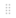

Gantt chart¶
The Gantt chart is a tool used in scheduling and project management and allowing to visualize in time the various tasks composing a project.
It is a representation of a connected graph, evaluated and oriented, which makes it possible to graphically represent the progress of the project
This chapter offers many features that will be described in the next sections
Planning¶
This screen allows to define projects planning and follow progress.
Gantt (Planning)¶
the Gantt Chart is composed of two main areas:

{kind=link}
 Activity planning calculation
Activity planning calculation
Click on  to start the activity planning calculation.
to start the activity planning calculation.
See: Project planning
Note
Any changes to an assignment (rate, resource name, number, dates, etc.) made from an activity are not displayed on the planning screen with the new recalculated mode.
Click
to start the new planning calculationThe automatic schedule calculation only works when you are in the Gantt schedule view and you are editing an item from this screen.
 Buttons
Buttons
Click on to validate planning. See: Planning validation
Click on
 to save baseline of planning. See: Save Baseline
to save baseline of planning. See: Save BaselineClick on
 to get a printable version of the Gantt chart.
to get a printable version of the Gantt chart.Click on
 to export Gantt chart in PDF format. See: Export planning to PDF
to export Gantt chart in PDF format. See: Export planning to PDFClick on
 to export planning to MS-Project xml format.
to export planning to MS-Project xml format.Click on
 to create a new item. See: Add a new planning element
to create a new item. See: Add a new planning elementClick on
 to filter the list. see the picture below.
to filter the list. see the picture below.Click on
 to define the columns that will be displayed. See: Progress data view
to define the columns that will be displayed. See: Progress data view
Advanced filters of the Gantt chart¶
Note
Filter the schedule: possibility to filter the activities to display on the Gantt Planning view
The “parents” of the selected activities are also displayed to maintain the WBS structure
Warning
Check the box save date to keep registered displayed date of the overview planning, otherwise dates removing to general mode, after navigating away from this page.
{kind=link}
The baseline is a record of the planning state at a time T.
This option displays this line at the top and / or bottom of your current Gantt chart for comparison.
Baseline can be saved with .
Note
Ability to display two baselines on the Gantt chart.
You can recording only one baseline every day
 Show Critical path
Show Critical path
The critical path is used to determine the total duration of your project. The critical path of your project is the longest sequence of tasks that must be completed for the project to be completed by the due date.
click on the critical path check box to calculate and display the red path in the Gantt schedule.
Warning
Project tasks that are not traversed by the critical path are elements that will not affect the duration of the project and, even if modified, will not result in a modification of this duration on the entire project

The red net represents the critical path of the project.¶
Task list area¶
The task list area is composed with:
Task list & progress data view¶
Area splitter
The splitter is used to show or hide the progress data view.
Note
The progress data view is hidden by default.
Move the splitter on your right to display them.
Task List¶
The task list displays the planning elements in hierarchical form by dividing the WBS.
Tasks are regrouped by projects and activities.
Projects displayed
The projects displayed depend on the selection made with the project selector See: Top bar
Task list & progress data view¶
 and
and  Hide activities
Hide activities
Show or hide project activities
Click on or 
Icon of element
A specific icon appears to the left of each item type for faster identification.
Project
 project to recalculate (the Gant diagramm to display with the latest settings)
project to recalculate (the Gant diagramm to display with the latest settings) Activity
Activity Milestone
Milestone Meeting
MeetingTest session
Other items can be displayed in the Planning global (action, decision, delivery…)
Show WBS
Click on “Show WBS” to display the WBS number before the names.
Task list without and with WBS Display¶
Click on a line to display the detail of the item in the detail area.
Checkbox “Show closed items”
Flag on “Show closed items” allows to list closed items.
Progress data view¶
The progress data view allows to show progress on project elements. to display the progress columns, pull the splitter to the right.
For each planning element, the progress data are displayed at them right.

Progress data view¶
Group row
The group row has a gray background.
Used to display consolidated progress data by tasks.
Task row
The task row has a white background.
Used to display task progress data.
Note
Create a new item
Each new element
will be placed below the selected line in the “task” column after it is created.If this item is “new project” and you have selected a line activity. The new element will automatically be a project subproject of the activity in question
If no line is selected, the new item will move to the end of the task list
Define the columns of progress data that will be displayed
Click on
to define the columns displayed.Use checkboxes to select or unselect columns to display.
Use the  to reorder columns with drag & drop feature.
Click on OK button to apply changes.
Popup list - Select columns¶
Gantt chart view¶
The Gantt chart view is a graphical representation of the progress data of a project. For each planning element, a bar is associated with it
Gantt chart view¶
Scale
Scale available: daily, weekly, monthly and quarter
The Gantt chart view will be adjusted according to scale selected.
Display from… to…
Change the start and / or end date to limit or extend the display of a Gantt Chart.
Saving dates and All the projet
Save your dates to retrieve them on every connection.
Check “All the project” for the gantt chart to show all project tasks when possible.
If the display is truncated because the project is too long, think to change the display scale.
Gantt bars
The bars displayed in the gantt chart can appear with different colors. Each color has a meaning.
LIGHTER BAR: no charge
{kind=link}
-
Condition -
Activities without assigned work -
pale red or pale green as appropriate
GREEN BAR : all is well
{kind=link}
-
**Condition** -
Assigned resources are available and meet workload, validated or scheduled dates do not conflict with other items.
RED BAR : Overdue tasks

-
**Condition** -
Planned end date > Validated end date -
Real end date if completed task > Valited end date
PURPLE BAR : impossible to calculate the remaining work
{kind=link}
-
**Condition** -
the remaining work on the task can't be planned.
Note
example
When a resource is assigned to a task over a defined period of time, and the task requests a higher workload than the resource can provide, or if the resource is unavailable for the assigned task then the bar becomes purple.
REAL WORK IN PROGRESS
{kind=link}
-
Condition -
The line appears in the bar when real work is filled -
it shows the percentage of actual progress
Note
its length represents the percentage of completion based on the actual progress versus the length of the Gantt bar.
{kind=link}
-
Condition -
Graphic display of consolidated dates for planning elements group
Note
Displayed at group row level
Start with the smallest start date and end with the biggest end date, either with planned or real dates.
Note

item name and scheduled dates on the selected bar¶
Move the cursor over the bar to display item name and planned dates.
Dependencies between planning elements are displayed with an arrow.
To modify dependency link, click on dependency to displays a pop-up
Dependencies dialog box¶
3 dependency types are managed:
End-Start: The second activity can not start before the end of the first activity.
Start-Start: the successor can not begin before the beginning of the predecessor. Anyway, the successor can begin after the beginning of the predecessor.
 End-End: The successor should not end after the end of the predecessor, which leads to planning “as late as possible”. Anyway, the successor can end before the predecessor. Note that the successor “should” not end after the end of predecessor, but in some cases this will not be respected:
End-End: The successor should not end after the end of the predecessor, which leads to planning “as late as possible”. Anyway, the successor can end before the predecessor. Note that the successor “should” not end after the end of predecessor, but in some cases this will not be respected:
if the resource is already 100% used until the end of the successor
if the successor has another predecessor of type “End-Start” or “Start-Start” and the remaining time is not enough to complete the task
if the delay from the planning start date does not allow to complete the task
Note
Update Pop-up
Right click on a dependency link (when its color is orange) will show update pop-up
You can modify the delay, add a comment or remove the dependency.
Note
Graphical add dependency
You can easily add a dependency with drag and drop from predecessor bar to successor bar
These dependencies are always End-Start, but you can change their type afterwards
Milestone
Milestones appear as small diamonds. Filled if completed, empty otherwise.
Color of diamond depends on milestone progress.
Ongoing milestone and in times

Completed milestone and in times
Ongoing milestone and delayed
Planned end date > Validate end date

Completed milestone and delayed
Real end date > Validated end date

 Show resources
Show resources
Click on “Show resources” to display resources assigned to tasks.
Display with initials or with the complete name¶
 Current date
Current date

Current date bar¶
Yellow column indicates the current day, week, month or quarter, according to scale selected.
The red line in yellow collumn display the current day and time.
 Detail of the work
Detail of the work
Right click on a bar to displays the detail of the work for this bar.
Display details of the work¶
Warning
You have to selected week or day scale to display detail or a message will ask you to switch to smaller scale.
{kind=link}
On “floating” elements (floating milestone, fixed duration activity) without predecessor, set the planned start date to the validated start date
Project planning¶
Project planning and activity planning calculation can be done in the Gantt.
Project planning¶
Add a new planning element
Allows to create a new planning element.
The created element is added under the previously selected element with the same level of incrementation
The created element is added in the Gantt and detail window is opened.
The detail window allows to complete entry.
Popup menu - Create a new item¶
Note
Planning elements management
Click on an element, the detail window will be displayed.
Planning elements can be managed with their own dedicated screen.
Test session and Meeting elements can be added to the planning with their own dedicated screen.
Reorder planning elements
The selector  allows to reorder the planning elements.
allows to reorder the planning elements.
Note
Important !
Ability to move multiple tasks at one time from one location to another using the key control to select the lines and then dragging and dropping them.
Hierarchical level
show or hide project activities
Click on or to enlarge or reduce all groups of projects at the same time.
Dependency links
To create a dependency, click on a graphic element and keep it clicked, the mouse cursor changes to
 .
.Move the mouse cursor over the graphic element that will be linked and release the button.
Note
Dependency links management
In addition to being directly clickable in the Gantt schedule, you can manage dependencies in the detail screen of each element in the predecessor and successor section.
click on the Add button  to add or remove a dependency on the selected item
to add or remove a dependency on the selected item
Click on to start the activity planning calculation.
Automatic run plan
Check the box to activate automatic calculation on each change.
Warning
Only works on the Gantt Planning view. If the modification of an element is carried out on the dedicated screen of the element, then it is necessary to click again on BUTTON to restart the computation
Note
All modifications about assignement (rate, name or numbers of resources, dates…) done are not displayed on the new planning screen until having, for this purpose, activited the planning calculation, either in an automatic run plan or not. On the contrary, the screen planning will not change even if modifications have been loaded yet.
Automatic calculation
Differential calculation = calculation of projects that require a recalculation.
Complete calculation = calculation of all projects
The calculations are programmed according to a frequency of CRON type (every minute, every hour, at a given hour every day, at a given time on a given week day, …)
Planning validation
Allows to modify the dates validated by the planned dates.
This feature allows you to set all reference dates from the calculated schedule.
Action available
Always: will overwrite existing values.
If empty: will not overwrite existing values.
Store planned dates¶
Save baseline
The baseline is a record of the planning state at a time T.
Warning
Your can recording only one baseline every day
Record baseline¶
Increase and decrease indent

Indentation buttons¶
Increase indent
The element will become the child of the previous element.
Decrease indent
The element will be moved at the same level than the previous element.
Planning global¶

Global planning¶
The global planning allows to create and visualize any type of element (project, activity, milestones, risk, meeting, action …)
Add and Show any new planning element on Gantt chart
The created item is added in the Gantt and detail window is opened.
The detail window allows to complete entry
Project planning and activity planning calculation can be done in the Gantt.
Create a new item¶
Projects portfolio¶
This screen displays only the projects on the diagram. The activities and other elements that make up the schedule are hidden.
It displays summary and project dependencies only.
Note
This section describes specific behavior for this screen. All others behaviors are similar to Planning global screen.

Gantt (Projects portfolio)¶
Show milestones
Ability to display milestones or not.
If they are displayed, it is possible to define the type of milestone to display or to display them all.
All milestones are available: deliverable, incoming, key date…
Resource Planning¶
Gantt (Resource planning)¶
This screen displays Gantt chart from the resources point of view.
Assigned tasks are grouped under resource level.
On resource planning, group periodic meetings is under its parent
Ability to display assigned activities with zero load
Gantt bars
For activities, the Gantt bar is split in two:
Work bars¶
Real work in grey.
Left work in green or in red.
See: Gantt Bars
The gray bar in the middle graphically represents the actual percentage progress relative to the total duration of the activity
Note
This makes appear some planning gap between started work and reassessed work.
Dependencies behavior
Links between activities are displayed only in the resource group.
Links existing between tasks on different resources are not displayed.
Note
This section describes specific behavior for this screen.
All others behaviors are similar to Planning global screen.
Show project level
Tasks are grouped by project.
Click “View Project Level” to view the projects on which resource activities depend.
Below the two views with and without “View Project Level”

view with project levels and without project levels¶
Show left work
The remaining work can be displayed to the right of the Gantt bar..
Click “Show left work” to display or not the duration of the rest to be done. .
Limit display to selected ressource or team
Click and select one ressource to display only his data.
Click and select one team to display only data of resources of this team.
show activities without work
Ability to display assigned activities with zero work
The names of the activities appear in the task area but no gantt bar will be displayed
Export planning to PDF¶
Allows to export planning to PDF format. Export can be done horizontally (landscape) or vertically (portrait) in A4 and / or A3 format with great detail even with a zoom
Export contains all details and links between tasks and also include a pagination.

Export planning to PDF¶
Field |
Description |
|---|---|
Orientation |
Page orientation. |
Format |
Page format. |
Zoom |
Allows to fit planning on page. |
Repeat headers |
Planning can be span multiple pages. |
Note
Technical points
This feature will execute export on client side, in your browser. Thus the server will not be heavy loaded like standard PDF export does.
It is highly faster than standard PDF export.
Warning
This feature is hightly dependant to browser compatibility
Note
Browser compatibility
This new feature is technically complex and it is not compatible with all browsers.
Compatible with the latest versions of IE (v11), Firefox, Edge and Chrome.
Else, the old export feature will be used.
See also
Forced feature activation/deactivation
To enable this feature for all browsers, add the parameter $pdfPlanningBeta=’true’; in parameters.php file.
To disable if for all browsers (including Chrome), add the parameter $pdfPlanningBeta=’false’;
Default (when $pdfPlanningBeta parameter is not set) is enabled with Chrome, disabled with other browsers
Export planning to MS Project¶
You have the option of exporting XML in MS Project.
Click on the button to start the export.
You can open this format with ProjectLibre.
A user parameter allows you to enter if you want to add the assignments when exporting the project in MS-Project format.
See: Tab Export